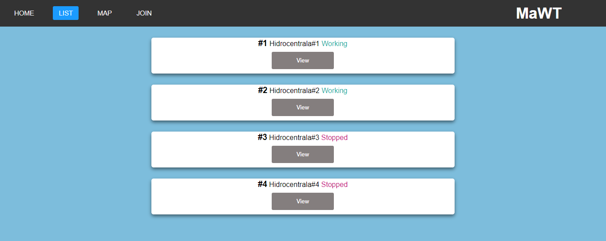
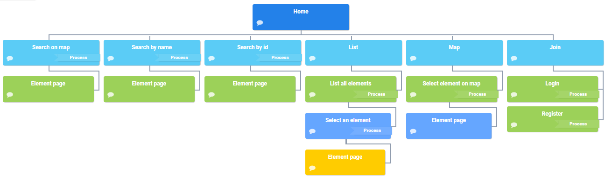

MaWT (Managing Water Turbines on Web)
Table of contents
1. Frontend
1.1 How to use
Starting on the home page the user can do the following:
- Start searching for a specific hydroelectric power station
- Go to all the list with all hydroelectric power station
- See the map with all the hydroelectric power station
- Create a new account or log in an existent one
On the List page the user can see the id, the name and the status of every hydroelectric power station and will be able to select one specific station to see more details about it.

On the Map page the user will see a map with every station.
On the join page the user will be able to create a new account, if he already has an account he can go to the log in button in the bottom right corner to authenticate
1.2. Sitemap
2. Backend
2.1. Communication with backend
HTTP requests arrive from the browser at the backend. Those requests may contain data in the HTTP header or request body. The intent may be to request new data or to transmit user-created data to the backend. Those requests are fired because a user clicked a link or by JS code running in the background. The frontend sends simple HTTP requests, form data or JSON-formatted data. To access the database, the PHP language is used.
2.2. Data flow (frontend to backend)
UI: The interface for the user.
Router: Depending on which request was fired, the router redirects the request to a controller
Controller: The first entry point to the backend. The controller invokes the model.
Model: Accesses the database (create, read, update, delete).
DB: Stores data.
2.3. Code structure
The code will be structured as a PHP REST Api with the MVC design pattern.
The folder structure:
|- models - will store a model for each table from database
|- controllers - will store a controller for each model
|- database - keep the migrations and establish the connection
|- config - used for defines
|- routes - establish all the valid routes
|- vendor - other files (router class, authentication class etc.)
2.4. Data storage
The database used is MySQL, each user's data and each hydroelectric power station's data is stored in the database.